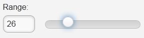
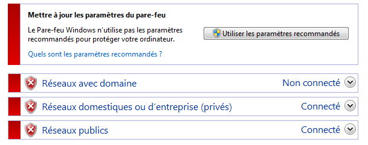

8. Introduction à Primefaces mobile
8.1. La place de Primefaces mobile dans une application JSF
Revenons à l'architecture d'une application Primefaces telle que nous l'avons étudiée au début de ce document :
 |
Lorsque la cible est le navigateur d'un téléphone mobile, il nous faut changer la présentation. En effet, la taille de l'écran d'un smartphone doit être prise en compte et l'ergonomie des pages repensée. Il existe des bibliothèques spécialisées dans la construction de pages web pour mobiles. C'est le cas de la bibliothèque Primefaces mobile qui s'appuie elle-même sur la bibliothèque JQuery mobile.
L'architecture d'une application web pour mobiles sera identique à la précédente si ce n'est qu'en plus de JSF et Primefaces, nous utiliserons la bibliothèque Primefaces mobile (PFM).
 |
Nous allons retrouver tous les concepts étudié avec JSF et Primefaces. Seule la couche [présentation] (les pages principalement) va changer.
8.2. Les apports de Primefaces mobile
Le site de Primefaces mobile
[http://www.primefaces.org/showcase-labs/mobile/showcase.jsf?javax.faces.RenderKitId=PRIMEFACES_MOBILE]
donne la liste des composants utilisables dans une page PFM [1, 2] :
 |
Il est possible d'utiliser des simulateurs de smartphone pour visualiser l'application de démo ci-dessus. L'un d'eux est disponible pour l'iphone 4 à l'URL [http://iphone4simulator.com/] [3]. On entre l'adresse de l'application à tester en [4] et celle-ci est affichée aux dimensions de l'iphone. De tels simulateurs sont utiles en phase de développement mais au final, l'application doit être testée en réel sur différents mobiles.
8.3. Apprentissage de Primefaces mobile
Primefaces mobile offre beaucoup moins de composants que Primefaces. Le site de Primefaces mobile
[http://www.primefaces.org/showcase-labs/mobile/showcase.jsf?javax.faces.RenderKitId=PRIMEFACES_MOBILE]
en donne la liste. Voici par exemple les composants utilisables dans un formulaire [1], [2], [3] :
 |
Il est possible de télécharger le code source des exemples [4]. Ainsi nous découvrons que la page PFM qui affiche les composants [1], [2], [3] ci-dessus est la suivante :
<?xml version="1.0" encoding="windows-1250"?>
<f:view xmlns="http://www.w3.org/1999/xhtml"
xmlns:f="http://java.sun.com/jsf/core"
xmlns:h="http://java.sun.com/jsf/html"
xmlns:ui="http://java.sun.com/jsf/facelets"
xmlns:p="http://primefaces.org/ui"
xmlns:pm="http://primefaces.org/mobile"
contentType="text/html">
<pm:page title="Components">
<!-- Forms -->
<pm:view id="forms">
<pm:header title="Forms">
<f:facet name="left"><p:button value="Back" icon="back" href="#main?reverse=true"/></f:facet>
</pm:header>
<pm:content>
<p:inputText label="Input:" />
<p:inputText label="Search:" type="search"/>
<p:inputText label="Phone:" type="tel"/>
<p:inputTextarea id="inputTextarea" label="Textarea:"/>
<pm:field>
<h:outputLabel for="selectOneMenu" value="Dropdown: "/>
<h:selectOneMenu id="selectOneMenu">
<f:selectItem itemLabel="Select One" itemValue="" />
<f:selectItem itemLabel="Option 1" itemValue="Option 1" />
<f:selectItem itemLabel="Option 2" itemValue="Option 2" />
<f:selectItem itemLabel="Option 3" itemValue="Option 3" />
</h:selectOneMenu>
</pm:field>
<pm:inputRange id="range" minValue="0" maxValue="100" label="Range:" />
<pm:switch id="switch" onLabel="yes" offLabel="no" label="Switch:" />
<p:selectBooleanCheckbox id="booleanCheckbox" value="false" itemLabel="I agree" label="Checkbox"/>
<p:selectManyCheckbox id="checkbox" label="Checkboxes: ">
<f:selectItem itemLabel="Option 1" itemValue="Option 1" />
<f:selectItem itemLabel="Option 2" itemValue="Option 2" />
<f:selectItem itemLabel="Option 3" itemValue="Option 3" />
</p:selectManyCheckbox>
<p:selectOneRadio id="radio" label="Radios: ">
<f:selectItem itemLabel="Option 1" itemValue="Option 1" />
<f:selectItem itemLabel="Option 2" itemValue="Option 2" />
<f:selectItem itemLabel="Option 3" itemValue="Option 3" />
</p:selectOneRadio>
</pm:content>
</pm:view>
</pm:page>
</f:view>
- ligne 7 : un nouvel espace de noms apparaît, celui des composants Primefaces mobile de préfixe pm,
- ligne 10 : définit une page. Une page va être composée de plusieurs vues (ligne 12). Une seule vue est visible à un moment donné. On retrouve là un concept que nous avons abondamment utilisé dans nos exemples Primefaces, une unique page avec plusieurs fragments qu'on affiche ou qu'on cache. Ici, nous n'aurons pas à faire ce jeu. Nous désignerons simplement la vue à afficher, les autres étant forcément cachées,
- ligne 12 : une vue,
- lignes 13-15 : définissent l'en-tête de la vue :
<pm:header title="Forms">
<f:facet name="left"><p:button value="Back" icon="back" href="#main?reverse=true"/></f:facet>
</pm:header>
On notera la balise pour générer un bouton. L'attribut href permet de naviguer. Sa valeur ici est le nom d'une vue. Un clic sur le bouton va ramener (reverse=true) vers la vue nommée main (non représentée ici).
- ligne 16 : introduit le contenu de la vue,
- ligne 17 : génère une zone de saisie :
<p:inputText label="Input:" />
 |
- ligne 18 : une zone de saisie avec une icône particulière :
<p:inputText label="Search:" type="search"/>
 |
- ligne 19 : une zone de saisie pour un n° de téléphone :
<p:inputText label="Phone:" type="tel"/>
 |
L'attribut type d'une balise <inputText> a une signification : elle induit le type du clavier proposé à l'utilisateur pour faire sa saisie. Ainsi pour le type='tel' sera proposé un clavier numérique,
- ligne 20 : une zone de saisie multi-lignes et extensible :
<p:inputTextarea id="inputTextarea" label="Textarea:"/>
 |
- lignes 21-29 : un champ rassemblant plusieurs composants :
<pm:field>
<h:outputLabel for="selectOneMenu" value="Dropdown: "/>
<h:selectOneMenu id="selectOneMenu">
<f:selectItem itemLabel="Select One" itemValue="" />
<f:selectItem itemLabel="Option 1" itemValue="Option 1" />
<f:selectItem itemLabel="Option 2" itemValue="Option 2" />
<f:selectItem itemLabel="Option 3" itemValue="Option 3" />
</h:selectOneMenu>
</pm:field>
 |  |
- ligne 2 : le libellé pour le composant de la ligne 3 ;
- ligne 3 : une liste déroulante ;
- lignes 4-7 : son contenu,
- ligne 30 : un slider :
<pm:inputRange id="range" minValue="0" maxValue="100" label="Range:" />
 |
- ligne 31 : un bouton à deux valeurs :
<pm:switch id="switch" onLabel="yes" offLabel="no" label="Switch:" />
 |  |
- ligne 32 : une case à cocher :
<p:selectBooleanCheckbox id="booleanCheckbox" value="false" itemLabel="I agree" label="Checkbox"/>
 |
- lignes 33-37 : un groupe de cases à cocher :
<p:selectManyCheckbox id="checkbox" label="Checkboxes: ">
<f:selectItem itemLabel="Option 1" itemValue="Option 1" />
<f:selectItem itemLabel="Option 2" itemValue="Option 2" />
<f:selectItem itemLabel="Option 3" itemValue="Option 3" />
</p:selectManyCheckbox>
 |
- lignes 38-42 : un groupe de boutons radio
<p:selectOneRadio id="radio" label="Radios: ">
<f:selectItem itemLabel="Option 1" itemValue="Option 1" />
<f:selectItem itemLabel="Option 2" itemValue="Option 2" />
<f:selectItem itemLabel="Option 3" itemValue="Option 3" />
</p:selectOneRadio>
 |
On notera que la page utilise des balises des trois bibliothèques JSF, PF et PFM. Nous en savons assez pour construire notre premier projet Primefaces mobile.
8.4. Un premier projet Primefaces mobile : mv-pfm-01
Nous allons reprendre l'exemple étudié précédemment pour l'intégrer dans un projet Maven. Nous allons ainsi découvrir les dépendances nécessaires à un projet Primefaces mobile.
8.4.1. Le projet Netbeans
Le projet Netbeans est le suivant :
 |
Le projet Netbeans est au départ un projet web Maven de base auquel on a ajouté les dépendances [2]. Cela se traduit dans le fichier [pom.xml] par le code suivant :
<dependency>
<groupId>com.sun.faces</groupId>
<artifactId>jsf-impl</artifactId>
<version>2.1.8</version>
</dependency>
<dependency>
<groupId>org.primefaces</groupId>
<artifactId>primefaces</artifactId>
<version>3.2</version>
</dependency>
<dependency>
<groupId>org.primefaces</groupId>
<artifactId>mobile</artifactId>
<version>0.9.1</version>
<type>jar</type>
</dependency>
</dependencies>
<repositories>
<repository>
<url>http://download.java.net/maven/2/</url>
<id>jsf20</id>
<layout>default</layout>
<name>Repository for library Library[jsf20]</name>
</repository>
<repository>
<url>http://repository.primefaces.org/</url>
<id>primefaces</id>
<layout>default</layout>
<name>Repository for library Library[primefaces]</name>
</repository>
</repositories>
En lignes 11-16, la dépendance vers Primefaces mobile. Nous avons pris ici la version 0.9.1 (ligne 14). Par ailleurs, nous avons pris la version 3.2 de Primefaces (ligne 9). Ces numéros de version sont importants. En effet, j'ai rencontré pas mal de problèmes avec PFM qui est une bibliothèque non finalisée. Il a ainsi existé pendant un certain temps une version 0.9.2 qui était boguée. Elle a depuis été retirée. On est revenu à la version 0.9.1. Le projet PFM a donc régressé. Les tests ont également échoué avec la version 1.0-SNAPSHOT de la version 1.0 en cours de construction (début juin 2012).
La page d'accueil [index.xhtml] [1] est la page de démonstration des composants Primefaces mobile :
<?xml version="1.0" encoding="windows-1250"?>
<f:view xmlns="http://www.w3.org/1999/xhtml"
xmlns:f="http://java.sun.com/jsf/core"
xmlns:h="http://java.sun.com/jsf/html"
xmlns:ui="http://java.sun.com/jsf/facelets"
xmlns:p="http://primefaces.org/ui"
xmlns:pm="http://primefaces.org/mobile"
contentType="text/html">
<pm:page title="Components">
<!-- Main View -->
<pm:view id="main">
...
</pm:view>
<!-- Forms -->
<pm:view id="forms">
...
</pm:view>
<!-- Buttons -->
<pm:view id="buttons">
...
</pm:view>
...
</pm:page>
</f:view>
Il y a une page unique (ligne 10) composée de douze vues. Nous ne détaillons pas celles-ci. Le but ici est de simplement montrer comment construire un projet Primefaces mobile.
Exécutons ce projet. On obtient une page d'erreur [1] :
 |
La raison en est qu'une application Primefaces mobile doit être appelée avec le paramètre [?javax.faces.RenderKitId=PRIMEFACES_MOBILE] comme en [2]. Il est possible de se passer de ce paramètre en modifiant le fichier [faces-config.xml] (ou en le créant s'il n'existe pas comme ici) [3] :
 |
Son contenu est le suivant :
<?xml version='1.0' encoding='UTF-8'?>
<!-- =========== FULL CONFIGURATION FILE ================================== -->
<faces-config version="2.0"
xmlns="http://java.sun.com/xml/ns/javaee"
xmlns:xsi="http://www.w3.org/2001/XMLSchema-instance"
xsi:schemaLocation="http://java.sun.com/xml/ns/javaee http://java.sun.com/xml/ns/javaee/web-facesconfig_2_0.xsd">
<application>
<default-render-kit-id>PRIMEFACES_MOBILE</default-render-kit-id>
</application>
</faces-config>
- ligne 11 : fixe la valeur du paramètre [javax.faces.RenderKitId].
A l'exécution, on obtient la même page que précédemment mais sans avoir à mettre de paramètre à l'URL [4]. Nous laissons au lecteur le soin de tester cette application. On y découvre des bogues : la balise <p:selectManyCheckbox> ne s'affiche pas, idem pour la balise <p:selectOneRadio>, la balise <pm:range> ne fonctionne pas. Ces dysfonctionnements, qui n'existent pas sur le site de la démo, laissent à penser que celle-ci ne fonctionne pas avec la combinaisons utilisée ici de Primefaces mobile 0.9.1 avec Primefaces 3.2. Mais c'est néanmoins un point de départ pour découvrir les balises de cette bibliothèque en cours de construction.
Pour avoir un rendu plus réaliste, on pourra tester l'application sur un simulateur comme celui de l'iphone 4 [http://iphone4simulator.com/]. On obtient la chose suivante :
 |
On rentre en [5], la même URL utilisée par le navigateur précédent en [4].
8.5. Exemple mv-pfm-02 : formulaire et modèle
Dans ce projet, nous montrons les interactions entre une page Primefaces mobile et son modèle. Celles-ci suivent les règles du framework JSF sur lequel repose au final Primefaces mobile.
8.5.1. Les vues
Il y a deux vues dans le projet
 |
- la vue 1 [1] présente un formulaire qu'on peut valider [2],
- la vue 2 [3] confirme les saisies et offre la posibilité de revenir au formulaire [4].
Le projet montre deux choses :
- la relation entre une page et son modèle,
- la navigation entre vues de la page.
8.5.2. Le projet Netbeans
Le projet Netbeans est le suivant :
 |
- en [1], la page Primefaces mobile,
- en [2], son modèle
- en [3], les fichiers de messages car l'application est internationalisée,
- en [4], les dépendances du projet.
8.5.3. Configuration du projet
Nous donnons les fichiers de configuration sans les expliquer. Ils sont désormais classiques.
[web.xml] : configure l'application web :
<?xml version="1.0" encoding="UTF-8"?>
<web-app version="3.0" xmlns="http://java.sun.com/xml/ns/javaee" xmlns:xsi="http://www.w3.org/2001/XMLSchema-instance" xsi:schemaLocation="http://java.sun.com/xml/ns/javaee http://java.sun.com/xml/ns/javaee/web-app_3_0.xsd">
<context-param>
<param-name>javax.faces.PROJECT_STAGE</param-name>
<param-value>Development</param-value>
</context-param>
<servlet>
<servlet-name>Faces Servlet</servlet-name>
<servlet-class>javax.faces.webapp.FacesServlet</servlet-class>
<load-on-startup>1</load-on-startup>
</servlet>
<servlet-mapping>
<servlet-name>Faces Servlet</servlet-name>
<url-pattern>/faces/*</url-pattern>
</servlet-mapping>
<session-config>
<session-timeout>
30
</session-timeout>
</session-config>
<welcome-file-list>
<welcome-file>faces/index.xhtml</welcome-file>
</welcome-file-list>
</web-app>
[faces-config.xml] : configure l'application JSF :
<?xml version='1.0' encoding='UTF-8'?>
<!-- =========== FULL CONFIGURATION FILE ================================== -->
<faces-config version="2.0"
xmlns="http://java.sun.com/xml/ns/javaee"
xmlns:xsi="http://www.w3.org/2001/XMLSchema-instance"
xsi:schemaLocation="http://java.sun.com/xml/ns/javaee http://java.sun.com/xml/ns/javaee/web-facesconfig_2_0.xsd">
<application>
<resource-bundle>
<base-name>
messages
</base-name>
<var>msg</var>
</resource-bundle>
<message-bundle>messages</message-bundle>
<default-render-kit-id>PRIMEFACES_MOBILE</default-render-kit-id>
</application>
</faces-config>
[messages_fr.properties] : le fichier des messages français :
forms=Formulaire
input=Saisie de texte
textarea=Saisie multi-lignes
dropdown=Liste d\u00e9roulante
range=Slider
switch=Switch
checkbox=Case \u00e0 cocher
checkboxes=Cases \u00e0 cocher
radios=Boutons radio
valider=Valider
confirmations=Confirmations
back=Retour
8.5.4. La page Primefaces mobile
La page [index.xhtml] est la suivante :
<?xml version="1.0" encoding='UTF-8'?>
<f:view xmlns="http://www.w3.org/1999/xhtml"
xmlns:f="http://java.sun.com/jsf/core"
xmlns:h="http://java.sun.com/jsf/html"
xmlns:ui="http://java.sun.com/jsf/facelets"
xmlns:p="http://primefaces.org/ui"
xmlns:pm="http://primefaces.org/mobile"
contentType="text/html">
<pm:page title="mv-pfm-02">
<!-- vue Forms -->
<pm:view id="forms" swatch="b">
<pm:header title="#{msg['forms']}"/>
<pm:content>
<h:form id="formulaire">
<p:inputText id="inputText" label="#{msg['input']}" value="#{form.inputText}"/>
<p:inputTextarea id="inputTextArea" label="#{msg['textarea']}" value="#{form.inputTextArea}"/>
<pm:field>
<h:outputLabel for="selectOneMenu" value="#{msg['dropdown']}"/>
<h:selectOneMenu id="selectOneMenu" value="#{form.selectOneMenu}">
<f:selectItem itemLabel="Option 1" itemValue="1" />
<f:selectItem itemLabel="Option 2" itemValue="2" />
<f:selectItem itemLabel="Option 3" itemValue="3" />
</h:selectOneMenu>
</pm:field>
<pm:inputRange id="range" minValue="0" maxValue="100" label="#{msg['range']}" value="#{form.range}"/>
<pm:switch id="switch" onLabel="yes" offLabel="no" label="#{msg['switch']}" value="#{form.bswitch}"/>
<p:selectBooleanCheckbox id="booleanCheckbox" itemLabel="I agree" label="#{msg['checkbox']}" value="#{form.booleanCheckbox}"/>
<pm:field>
<h:outputLabel for="manyCheckbox" value="#{msg['checkboxes']}"/>
<h:selectManyCheckbox id="manyCheckbox" value="#{form.manyCheckbox}">
<f:selectItem itemLabel="Option 1" itemValue="1" />
<f:selectItem itemLabel="Option 2" itemValue="2" />
<f:selectItem itemLabel="Option 3" itemValue="3" />
</h:selectManyCheckbox>
</pm:field>
<pm:field>
<h:outputLabel for="radio" value="#{msg['radios']}"/>
<h:selectOneRadio id="radio" value="#{form.radio}">
<f:selectItem itemLabel="Option 1" itemValue="1" />
<f:selectItem itemLabel="Option 2" itemValue="2" />
<f:selectItem itemLabel="Option 3" itemValue="3" />
</h:selectOneRadio>
</pm:field>
<p:commandButton inline="true" value="#{msg['valider']}" update=":infos" action="#{form.valider}"/>
</h:form>
</pm:content>
</pm:view>
<!-- vue infos -->
<pm:view id="infos" swatch="b">
<pm:header title="#{msg['confirmations']}">
<f:facet name="left"><p:button value="#{msg['back']}" icon="back" href="#forms?reverse=true"/></f:facet>
</pm:header>
<pm:content>
<ul>
<li>#{msg['input']} : ${form.inputText}</li>
<li>#{msg['textarea']} : ${form.inputTextArea}</li>
<li>#{msg['dropdown']} : ${form.selectOneMenu}</li>
<li>#{msg['range']} : ${form.range}</li>
<li>#{msg['switch']} : ${form.bswitch}</li>
<li>#{msg['checkbox']} : ${form.booleanCheckbox}</li>
<li>#{msg['checkboxes']} : ${form.manyCheckboxValue}</li>
<li>#{msg['radios']} : ${form.radio}</li>
</ul>
</pm:content>
</pm:view>
</pm:page>
</f:view>
Nous avons repris l'exemple de démonstration du site de Primefaces mobile en l'aménageant pour qu'il fonctionne :
- la balise <p:selectManyCheckbox> n'était pas affichée. Nous l'avons remplacée par une balise <h:selectManyCheckbox> (ligne 32),
- la balise <p:selectOneRadio> n'était pas affichée. Nous l'avons remplacée par une balise <p:selectOneRadio> (ligne 40),
- ligne 27 : nous avons gardé la balise <pm:inputRange> qui affiche un slider. Celui-ci est bogué : on ne peut pas déplacer le curseur du slider. Mais on peut saisir un nombre qui le fait alors bouger,
- on notera qu'il y a peu de balises propres à PFM (lignes 13, 14, 15, 19, 27, 28 dans la première vue). Les autres balises sont des balises JSF et PF classiques. Primefaces mobile repose sur ces deux frameworks.
Notons la structure de la page :
<?xml version="1.0" encoding='UTF-8'?>
<f:view xmlns="http://www.w3.org/1999/xhtml"
xmlns:f="http://java.sun.com/jsf/core"
xmlns:h="http://java.sun.com/jsf/html"
xmlns:ui="http://java.sun.com/jsf/facelets"
xmlns:p="http://primefaces.org/ui"
xmlns:pm="http://primefaces.org/mobile"
contentType="text/html">
<pm:page title="mv-pfm-02">
<!-- vue Forms -->
<pm:view id="forms" swatch="b">
<pm:header ...>
<pm:content>
<h:form id="formulaire">
...
<p:commandButton inline="true" value="#{msg['valider']}" update=":infos" action="#{form.valider}"/>
</h:form>
</pm:content>
</pm:view>
<!-- vue infos -->
<pm:view id="infos" swatch="b">
<pm:header title="#{msg['confirmations']}">
<f:facet name="left"><p:button value="#{msg['back']}" icon="back" href="#forms?reverse=true"/></f:facet>
</pm:header>
<pm:content>
...
</pm:content>
</pm:view>
</pm:page>
</f:view>
- ligne 10 : définit une page PFM. L'attribut title fixe le titre affiché par le navigateur,
- une page est composée d'une ou plusieurs vues. Au premier affichage de la page, c'est la première vue qui est affichée. Ensuite on passe d'une vue à l'autre par navigation. Ici il y a deux vues forms ligne 13 et infos ligne 24,
- ligne 14 : la balise header définit l'entête d'une vue,
- ligne 15 : la balise content définit le contenu d'une vue,
- ligne 16 : la vue forms contient un formulaire JSF,
- ligne 18 : ce formulaire sera validé par un bouton Primefaces classique. Le formulaire sera posté au modèle [Form] et sera traité par la méthode [Form].valider. Cette méthode fera son travail. Nous verrons qu'elle demande l'affichage de la vue infos. Auparavant cette vue aura été mise à jour par l'appel AJAX (attribut update),
- ligne 26 : on pourra passer de la vue infos à la vue forms avec un bouton. On notera la forme de l'attribut href [href="#forms?reverse=true"]. La notation #forms désigne la vue forms. Le paramètre reverse=true demande un retour en arrière. J'ai repris cet attribut de la démo. Lorsqu'on l'enlève, on ne voit aucune différence sur un simulateur... Peut-être y-en-a-t-il une sur de vrais smartphones,
- on notera enfin l'utilisation de la bibliothèque Primefaces mobile ligne 7.
Même si elle apporte des nouveautés, cette page PFM est tout à fait compréhensible. Il en est de même pour son modèle [Form.java].
8.5.5. Le modèle [Form.java]
Ce modèle est le suivant :
package beans;
import java.io.Serializable;
import javax.faces.bean.ManagedBean;
import javax.faces.bean.SessionScoped;
@ManagedBean
@SessionScoped
public class Form implements Serializable {
// modèle
private String inputText = "bonjour";
private String inputTextArea = "ligne1\nligne2";
private String selectOneMenu = "2";
private int range = 4;
private boolean bswitch = true;
private boolean booleanCheckbox = false;
private String[] manyCheckbox = {"1", "3"};
private String radio = "3";
public String valider() {
// on passe à la vue infos
return "pm:infos";
}
public String getManyCheckboxValue() {
StringBuffer str = new StringBuffer("[");
for (String checkbox : manyCheckbox) {
str.append(checkbox);
}
str.append("]");
return str.toString();
}
// getters et setters
...
}
Il n'y a là rien de neuf. Tout a été déjà vu. On notera quand même la forme de la méthode valider appelée par le formulaire. Ligne 21 : elle rend une chaîne de caractères qui a la forme 'pm:nomdelavueaafficher'. Ici, la vue infos sera donc affichée. La méthode ne fait rien d'autre que cette navigation. Auparavant les champs des lignes 12-19 ont reçu les valeurs postées. Celles-ci vont servir à mettre à jour la vue infos (attribut update ci-dessous) :
<p:commandButton inline="true" value="#{msg['valider']}" update=":infos" action="#{form.valider}"/>
La vue infos va alors afficher les valeurs postées :
 |
<pm:view id="infos" swatch="b">
<pm:header title="#{msg['confirmations']}">
<f:facet name="left"><p:button value="#{msg['back']}" icon="back" href="#forms"/></f:facet>
</pm:header>
<pm:content>
<ul>
<li>#{msg['input']} : ${form.inputText}</li>
<li>#{msg['textarea']} : ${form.inputTextArea}</li>
<li>#{msg['dropdown']} : ${form.selectOneMenu}</li>
<li>#{msg['range']} : ${form.range}</li>
<li>#{msg['switch']} : ${form.bswitch}</li>
<li>#{msg['checkbox']} : ${form.booleanCheckbox}</li>
<li>#{msg['checkboxes']} : ${form.manyCheckboxValue}</li>
<li>#{msg['radios']} : ${form.radio}</li>
</ul>
</pm:content>
</pm:view>
8.5.6. Les tests
On exécute le projet Netbeans. Une fois le projet déployé sur Tomcat [1], on peut le tester sur un simulateur [http://iphone4simulator.com/] [2] :
 |
Nous allons maintenant montrer comment le tester sur un vrai smartphone. Nous allons connecter le serveur qui héberge l'application et le smartphone sur un même réseau WIFI :
 |
On connecte le serveur au réseau wifi. On peut ensuite vérifier son adresse IP :
 |
On notera ci-dessus l'adresse IP du serveur : 192.168.1.127. On inhibe les éventuels pare-feu et antivirus du serveur :
 |
Sur le serveur, on lance l'application [mv-pfm-02] dans Netbeans [1] :
 |
On connecte le smartphone sur le même réseau wifi que le serveur pour que les deux appareils se voient. Puis on ouvre un navigateur et on demande l'URL [http://192.168.1.127:8080/mv-pfm-02/] [2]. Ensuite on peut tester l'application. On découvrira ainsi avec bonheur que le slider qui ne marche pas dans le simulateur marche dans le smartphone. Il y a donc un décalage entre simulateurs et machines.
8.6. Conclusion
Nous n'avons présenté que les balises de formulaire de la bibliothèque Primefaces mobile mais c'est suffisant pour notre application exemple.
8.7. Les tests avec Eclipse
On importe dans Eclipse les projets Maven [1] et on les exécute [2],
 |
sur le serveur Tomcat [3]. L'application exécutée apparaît alors dans le navigateur interne à Eclipse [4].
 |
On notera que l'application [mv-pfm-02] a présenté des dysfonctionnements dans le navigateur d'Eclipse. Si on la charge dans les navigateurs Firefox ou IE, ceux-ci ont disparu.